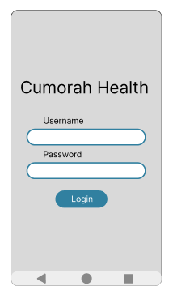
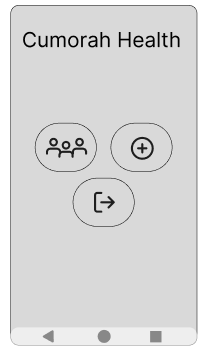
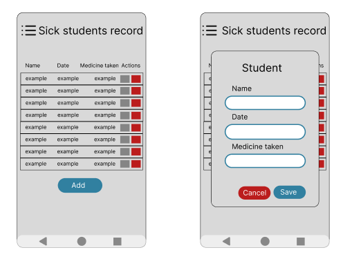
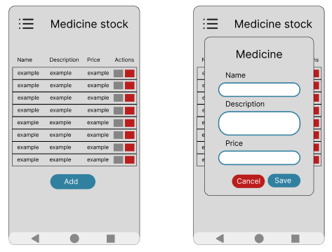
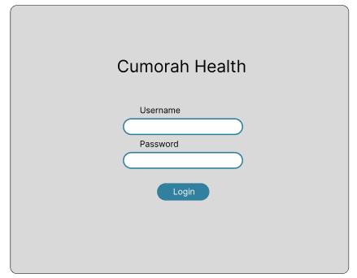
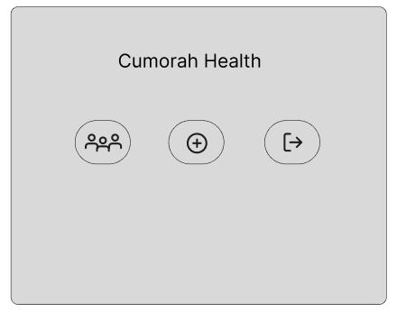
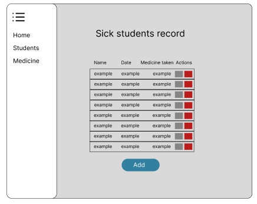
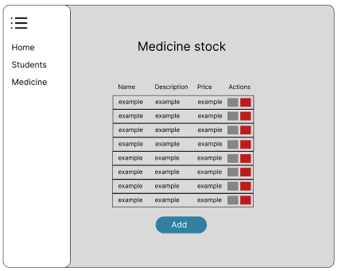

Summary
The Cumorah Academy website is a centralized platform designed to manage and track student health records and medicine availability. Students can view available medicines directly on the form they use to report illness. Staff members have access to manage both student health records and the inventory of medicines, ensuring efficient and organized health care support.
Site name
Cumorha Health
This name represents some of the resources Cumorah Academy have to take care of the students health
Site purpose
To enhance health care management at Cumorah Academy by simplifying access to medicines for students and providing staff with tools to oversee and manage health records and medicine inventories effectively.
Senarios
- John, a student at Cumorah Academy, starts feeling unwell and decides to report his sickness using the medical absence form on the website. While filling out the form, he sees a list of available medicines, selects the ones he needs, and submits the request. The staff member responsible for medical support receives the notification, prepares the medicine, and updates John's health record in the system.
- Maria, a staff member at Cumorah Academy, notices that the inventory for a commonly used medicine is running low. She logs into the platform to update the stock and records the new pricing after ordering more supplies. She also checks the health records to ensure all students who recently requested the medicine have been properly assisted.
Color Schema
Color: #3180a0
Color: #266B86
Color: #f2f2f2
Typography
Roboto
Wireframe







